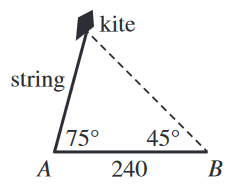

The figure below shows a flying kite. At a certain
moment, the kite string forms an angle of elevation of
\(75^\circ\) from point \(A\) on the ground. At the same moment,
the angle of elevation of the kite at point \(B\), \(240\) ft from
\(A\) on level ground, is \(45^\circ\). What is the length, in feet, of
the string?

Call the point where the kite is \(C\) and opposite side \(c=240\). Then, using law of sines,
$$ \frac{c}{\sin{C}} = \frac{b}{\sin{B}} $$
$$ \frac{240}{\sin{60^\circ}} = \frac{\text{string length}}{\sin{45^\circ}} $$
We can use the calculator, but it will end up with a decimal number.
You can check to see if the first two choices match this decimal number. Alternatively, if you know your unit circle,
$$ \frac{240}{\sin{60^\circ}} = \frac{\text{string length}}{\sin{45^\circ}} $$
$$ \frac{240}{\frac{\sqrt{3}}{2}} = \frac{\text{string length}}{\frac{\sqrt{2}}{2}} $$
$$ \frac{240}{\sqrt{3}}= \frac{\text{string length}}{\sqrt{2}} $$
$$ \frac{240}{\sqrt{3}}\cdot \sqrt{2} = \text{string length} $$
$$ \frac{240\cdot \sqrt{6}}{3} = \text{string length} $$
$$ \text{string length} = \boxed{80\sqrt{6}} $$